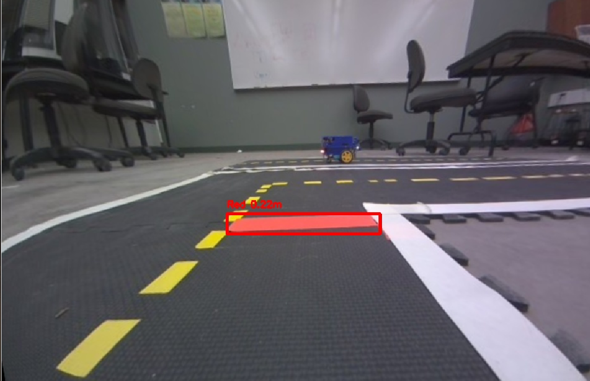

Part 1: Computer Vision
-
A screen capture of the distorted camera image
Camera Distortion
Camera distortion occurs due to the curvature of the lens, which bends light unevenly as it enters the camera sensor. This effect is particularly noticeable in radial distortion, where straight lines appear curved, especially near the edges of the image. We can see the same thing happen to our camera image in the above picture, especially near the edges, lines appear bent
Subscribing to camera topic: To capture a distorted image, we subscribe to the ROS topic /camera_node/image/compressed, which provides a compressed stream of images from the camera. The subscription allows us to receive and process real-time camera data in ROS.
-
A screen capture of the undistorted camera image

Undistorting the Image
To correct lens distortion, we use intrinsic parameters that describe the camera’s internal properties, such as focal length, optical center, and distortion coefficients. These parameters allow us to mathematically reverse the distortion effect and obtain a properly aligned image.
By performing these steps, we ensure that the camera feed provides an accurate and geometrically correct representation of the environment, which is essential for tasks such as color detection and lane following.
What we did
-
Subscribing to the camera topic:
The robot receives real-time images from the ROS topic
/camera_node/image/compressed. These images contain lens distortions that need correction before they can be used for accurate perception. -
Retrieving camera intrinsic parameters:
The robot's camera has unique calibration parameters stored in
/camera_node/camera_info. These include:- Camera Matrix: Defines how the camera maps the 3D world to a 2D image.
- Distortion Coefficients: Corrects radial and tangential distortions.
-
Calculating an optimal new camera matrix:
Using
cv2.getOptimalNewCameraMatrix(), we refine the camera matrix to minimize unwanted black borders in the corrected image. This step improves the visual quality of the output. -
Applying image correction:
The
cv2.undistort()function is used to transform the distorted image into an undistorted one. This ensures that straight lines appear as they should, and objects are accurately represented. -
Publishing the corrected image:
The final undistorted image is then published to
/camera_undistorted/image/compressed. This allows other ROS nodes, such as those responsible for color detection and lane following, to work with a geometrically correct image.
Purpose:
Undistortion is essential for accurate lane detection and navigation. When an image is distorted, straight lane markings can appear curved, leading to incorrect edge detection and misalignment. By correcting distortion, the robot can accurately perceive lane boundaries and navigate accordingly. Additionally, distorted images can stretch or compress objects, causing inconsistencies in object sizing. Undistortion ensures that objects appear with correct proportions, improving the accuracy of both lane detection and obstacle recognition. Color detection also benefits from undistortion, as color inconsistencies often occur near the edges of distorted images. By stabilizing the image, the robot can reliably detect lane colors without interference from warped color transitions. Finally, distance estimation depends on an accurate visual representation of the environment. Since distorted images alter the perceived shape and position of objects, correcting the distortion ensures that distance calculations remain precise, leading to more reliable navigation and decision-making.
-
Lane Detection Contours
The images below show the detected contours for blue, red, and green lanes using our ROS subscriber in
rqt_image_view. The contours are drawn based on color segmentation and edge detection, ensuring accurate lane identification.Contours Detecting a Blue Line

The above image shows how the blue lane is detected. The contours are drawn around the largest detected blue area using HSV filtering and contour extraction.
Contours Detecting a Red Line
This image demonstrates the detection of the red lane. Since red appears in two sections of the HSV color space, we use two separate hue ranges to ensure complete detection. The detected lane is highlighted with contours.
Contours Detecting a Green Line

The green lane is detected by applying a mask within the green HSV range. The contours drawn on the detected area highlight the extracted lane.
-
Explanation of Color Detection
Preprocessing the Image
The camera feed is first undistorted to correct for lens distortion. Then, the image is converted from BGR to HSV format to separate color components, making color segmentation more reliable.
Color detection is performed by converting the BGR image to HSV format and applying predefined HSV thresholds. The HSV (Hue, Saturation, Value) color model is preferred because it separates color intensity from brightness, making it more reliable under different lighting conditions.
How Color Detection Works
Applying Color Thresholding
The HSV model is used to filter out specific colors corresponding to red, blue, and green lanes. The following ranges are applied:
- Red Lane:
Lower: [0, 100, 100] & [170, 100, 100], Upper: [10, 255, 255] & [180, 255, 255] - Blue Lane:
Lower: [100, 150, 100], Upper: [130, 255, 255] - Green Lane:
Lower: [46, 50, 65], Upper: [95, 196, 199]
Each color mask isolates only the pixels matching the specified HSV range, filtering out everything else.
3. Removing Noise
Morphological operations, such as closing, are applied to remove small artifacts that could cause false detections.
4. Finding and Drawing Contours
Using
cv2.findContours(), lane boundaries are detected and enclosed in a bounding box usingcv2.boundingRect(). The largest detected contour for each color is selected.5. Estimating Distance to the Lane
The width of the detected lane in pixels is used to estimate its real-world distance using the pinhole camera model:
distance_m = (known_object_width_m * focal_length_px) / object_pixel_widthThe known width of the lane is a predefined constant, and the focal length is retrieved from the camera’s intrinsic parameters. This is used to see how far the object is from the robot
6. Publishing the Detected Lane
The processed image, with detected lanes and distance labels, is published to
/lane_detection/image/compressedfor integration with navigation modules. The dimensions of the detected lane is also published in the terminal. Example of our output:[INFO] [1740622024.705454]: Published lane detection image. [INFO] [1740622024.751194]: Detected: red, Dimensions: (240, 23), Distance: 0.223m [INFO] [1740622024.772927]: Published lane detection image. [INFO] [1740622024.830412]: Detected: red, Dimensions: (242, 22), Distance: 0.221m - Red Lane:
-
Summary of Detection for Each Color
Red Lane Detection
- Uses two HSV ranges to capture different red shades. - Filters out yellow regions that may overlap with red. - Extracts the largest contour and highlights it. - Used to detect stop points and straight movement areas.
Blue Lane Detection
- Detects blue lanes using a tight HSV range. - Filters out shadows and dark patches. - Contours are enclosed in a bounding box. - Used to trigger right turns in the navigation system.
Green Lane Detection
- Filters out unwanted environmental colors. - Detects left-turn trigger points. - Bounding boxes are drawn around the detected lane.
How to Tune HSV Parameters
The HSV values for each lane color are adjusted to optimize detection. The tuning process involves:
- Increasing or decreasing the Hue (H) range to fine-tune color recognition. If a color is not detected properly, the hue range is expanded or shifted.
- Adjusting the Saturation (S) range to control how vivid the colors need to be. This helps filter out faded colors and background noise.
- Modifying the Value (V) range to adjust brightness sensitivity. Raising the lower limit reduces false detections in dark regions.
- Testing under different lighting conditions to ensure the values work consistently.
The final HSV thresholds used for lane detection are:
- Blue Lane:
Lower: [100, 150, 100], Upper: [130, 255, 255] - Red Lane:
Lower: [0, 100, 100] & [170, 100, 100], Upper: [10, 255, 255] & [180, 255, 255] - Green Lane:
Lower: [46, 50, 65], Upper: [95, 196, 199]
-
Subscribing to the camera topic:
The robot receives real-time images from the ROS topic
- Duckietown Documentation: https://docs.duckietown.com/daffy/opmanual-duckiebot/intro.html
- ChatGPT was used for help with making the website and understanding why we need camera calibration